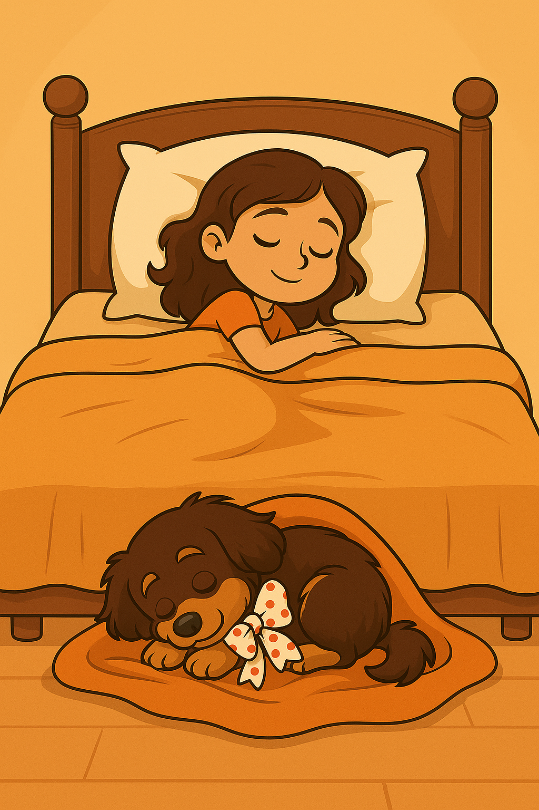

Los primeros cuidados

Después de darse una ducha caliente, "Meli" fue a darle algo de leche al cachorrito. Lo agarró entre sus brazos ya más calentito y le dio un poquito de leche con el gotero.
- Que bueno, le gusta y parece que le hace bien.
Luego puso una manta suave junto a su cama para acostar al cachorrito y, aunque en la noche se despertaba con pequeños quejidos, "Meli" le hablaba suavemente y lo acariciaba hasta que se volvía a dormir.
Escuchar cuento